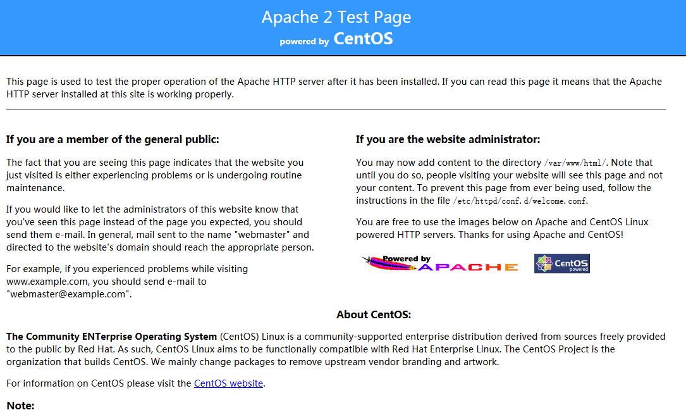

1 安装环境
Linux CentOS6
2 使用账户
root 根用户。此用户为系统根用户，拥有最高权限。SVN 服务需要频繁访问系统资源，
使用 root 用户可以避免一些不必要的麻烦。且 SVN 服务器通常为独立服务器，使用 root 用
户可以更好的管理服务器资源。
3 安装 Apache HTTP Server
3.1前置准备（可选）
在安装前，可以更新当前操作系统，减少漏洞。
更新命令 ： yum update
更新系统后，需要重新启动操作系统。
重启命令 ： reboot
3.2安装 Apache HTTP Server
命令 ： yum install httpd httpd-devel -y
3.3修改配置
命令 ： vi /etc/httpd/conf/httpd.conf
找到 ServerName 配置位置（vi 编辑器命令模式下输入：/ServerName），修改内容如下：
ServerName localhost:80
3.4修改防火墙配置
开放 80 端口访问权限。
命令 ： vi /etc/sysconfig/iptables
增加下述内容：
-A INPUT -m state --state NEW -m tcp -p tcp --dport 80 -j ACCEPT
修改后，重启防火墙服务，命令： service iptables restart
3.5启动 Apache HTTP Server 服务
命令 ： service httpd start
3.6测试访问
使用浏览器访问对应服务。假如使用的 Linux 虚拟机 IP 为：192.168.3.100。访问地址
为：http://192.168.120.159/。访问结果如下：

4 安装 SVN 服务
4.1停止 Apache HTTP Server 服务
命令 ： service httpd stop
4.2安装 svn 模块
命令 ： yum install mod_dav_svn subversion
4.3检查 svn 模块安装结果
当 svn 模块安装成功后，在/etc/httpd/modules/目录中会有对应信息产生，可使用
命令查看：ls /etc/httpd/modules | grep svn
结果如下：
mod_authz_svn.so
mod_dav_svn.so
也可以使用 svn 模块命令查看，命令为： svn --version
结果如下：
svn, version 1.6.11 (r934486)
compiled Aug 17 2015, 08:37:43
Copyright (C) 2000-2009 CollabNet.
Subversion is open source software, see http://subversion.tigris.org/
This product includes software developed by CollabNet (http://www.Collab.Net/).
The following repository access (RA) modules are available:
* ra_neon : Module for accessing a repository via WebDAV protocol using Neon.
- handles 'http' scheme
- handles 'https' scheme
* ra_svn : Module for accessing a repository using the svn network protocol.
- with Cyrus SASL authentication
- handles 'svn' scheme
* ra_local : Module for accessing a repository on local disk.
- handles 'file' scheme
4.4为 svn 仓库创建主目录
本示例将 svn 仓库主目录保存在系统根目录下，可根据具体情况修改。
mkdir /svn/
4.5修改 svn 配置信息
svn 配置文件保存在目录/etc/httpd/conf.d/目录中，配置文件为：subversion.conf
此配置文件是在安装 mod_dav_svn 时自动创建的。
命令 ： vi /etc/httpd/conf.d/subversion.conf
在配置文件中增加下述内容：
#Include /svn/httpd.conf
<Location /svn/> # 本地仓库目录位置。4.4 节点创建的位置
DAV svn # 模型简述
SVNListParentPath on # 开启上级目录列表能力
SVNParentPath /svn # 上级目录列表根目录。 4.4 节点创建的位置
AuthType Basic # 授权类型，
AuthName "Subversion repositories" # 拥有者名称
AuthUserFile /svn/passwd.http # 拥有者用户文件命名
AuthzSVNAccessFile /svn/authz # 用户授权文件命名
Require valid-user
</Location>
RedirectMatch ^(/svn)$ $1/
4.6创建密码文件和授权文件
命令 ：
touch /svn/passwd.http
touch /svn/authz